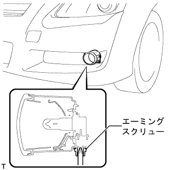

Fog Light Assembly LH Adjustment |
| 1. Preparation for Fog Light Aim Adjustment |
Adjust the tire pressure to the specified value. (see)
Start the engine and keep the battery in a charging condition.
| 2. Adjust Fog Light Aim |
 |
Turn the aiming screw from under the vehicle to adjust.
| 3. Inspect Fog Light Aim |